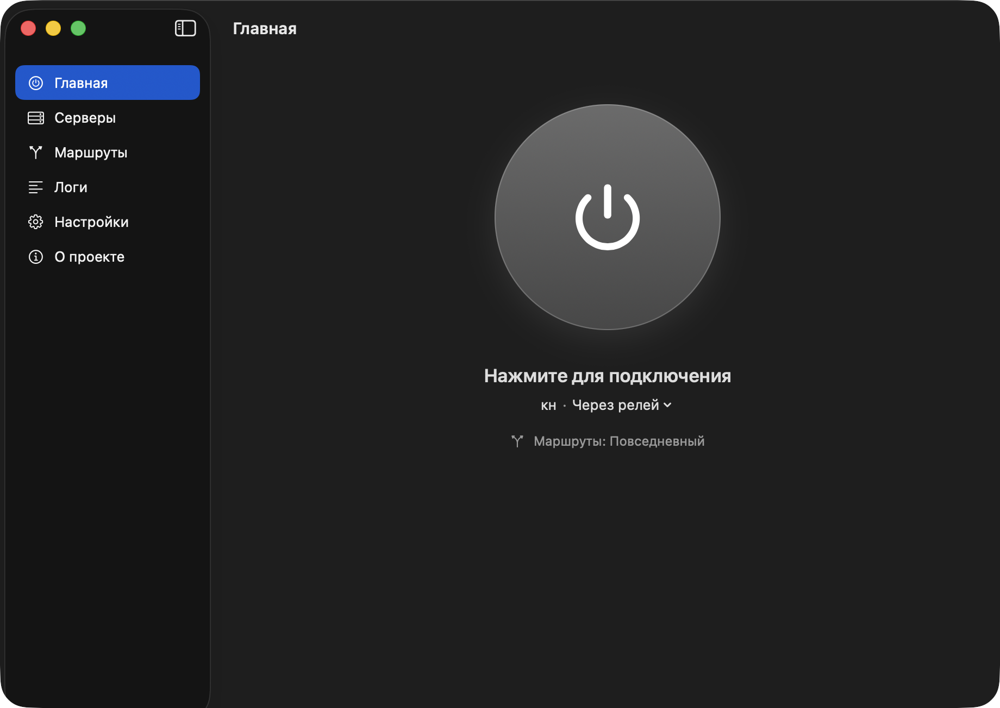
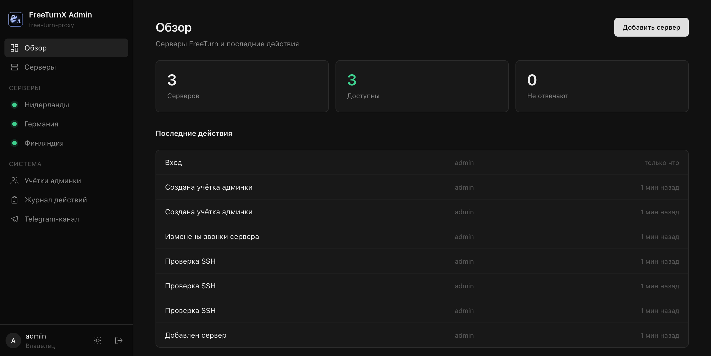

Клиент
Windows
Подключение, профили маршрутов и управление из трея. Привычный интерфейс Windows.
Windows 10 / 11 · x64 и ARM64
Скачать для Windows Установка и исходный код ↗Открытый код. Собственный сервер.
FreeTurnX объединяет нативные VPN-клиенты для Windows и macOS и панель управления серверами. Всё нужное — от выдачи доступа до подключения.
Выберите, с чего начать.
Подключение, профили маршрутов и управление из трея. Привычный интерфейс Windows.
Windows 10 / 11 · x64 и ARM64
Скачать для Windows Установка и исходный код ↗Нативное приложение для Mac. Быстрое подключение из строки меню и компактное окно.
macOS 14+ · Apple Silicon и Intel
Скачать для macOS Установка и исходный код ↗Веб-панель для ваших VPS. Установка сервера по SSH, пользователи, ссылки доступа и QR-коды.
Свой хостинг · Docker Compose
Развернуть панель Документация и исходный код ↗Клиентам нужен ваш сервер free-turn-proxy и конфигурация WireGuard. Для подключения через Relay также нужна ссылка на звонок.
Ничего лишнего
Настройте маршрут один раз.
Переключайтесь одним нажатием.
Выберите сервер, способ подключения и профиль маршрутов. Статус соединения всегда перед глазами.
Все скриншоты ↗


Два способа подключения к вашему серверу с поддержкой WireGuard и AmneziaWG.
Выбирайте, какие приложения, домены и подсети идут через VPN, а какие — напрямую.
Разворачивайте серверы через админку, выдавайте доступ ссылкой или QR-кодом и отзывайте его при необходимости.
Для Windows на Intel или AMD выбирайте x64, для Windows на ARM — ARM64. Для Mac с чипом M1 и новее — arm64, для Intel — x86_64. Кнопки загрузки ведут к последнему опубликованному релизу на GitHub.
Да. FreeTurnX — клиент для вашего сервера, а не VPN-сервис с готовой подпиской. Панель Admin помогает установить и настроить free-turn-proxy на VPS через SSH.
Доверенная подпись Windows пока не предоставлена. Сертификат не выдан; Windows может показывать предупреждение SmartScreen. Сборка macOS подписана ad-hoc, без нотаризации Apple.
Клиенты хранят настройки и журналы локально. Панель Admin работает на вашем хостинге. Для соединения используются выбранный сервер, сервис релея и другие настроенные сетевые сервисы.